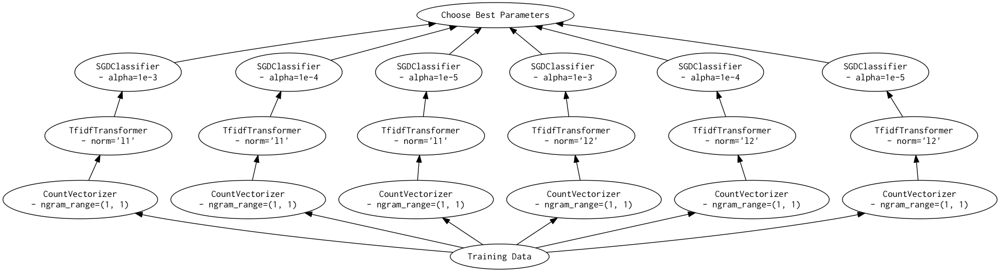
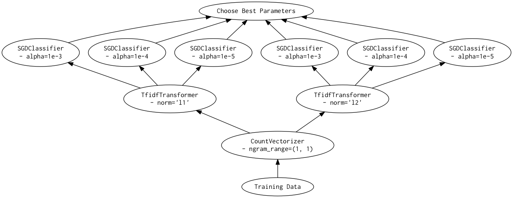
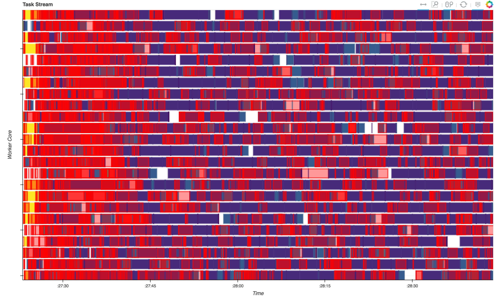

Tue 04 April 2017 — under dask
We introduce a new library for doing distributed hyperparameter optimization with Scikit-Learn estimators. We compare it to the existing Scikit-Learn implementations, and discuss when it may be useful compared to other approaches.
Last summer I spent some time experimenting with combining dask and scikit-learn (chronicled in this series of blog posts). The library that work produced was extremely alpha, and nothing really came out of it. Recently I picked this work up again, and am happy to say that we now have something I can be happy with. This involved a few major changes:
A sharp reduction in scope. The previous rendition tried to implement both model and data parallelism. Not being a machine-learning expert, the data parallelism was implemented in a less-than-rigorous manner. The scope is now pared back to just implementing hyperparameter searches (model parallelism), which is something we can do well.
Optimized graph building. Turns out when people are given the option to run grid search across a cluster, they immediately want to scale up the grid size. At the cost of more complicated code, we can handle extremely large grids (e.g. 500,000 candidates now takes seconds for the graph to build, as opposed to minutes before). It should be noted that for grids this size, an active search may perform significantly better. Relevant issue: #29.
Increased compatibility with Scikit-Learn. Now with only a few exceptions,
the implementations of GridSearchCV and RandomizedSearchCV should be
drop-ins for their scikit-learn counterparts.
All these changes have led to a name change (previously was dask-learn). The
new library is dask-searchcv. It can
be installed via conda or pip:
# conda
$ conda install dask-searchcv -c conda-forge
# pip
$ pip install dask-searchcv
In this post I'll give a brief overview of the library, and touch on when you might want to use it over other options.
Many machine learning algorithms have hyperparameters which can be tuned to improve the performance of the resulting estimator. A grid search is one way of optimizing these parameters — it works by doing a parameter sweep across a cartesian product of a subset of these parameters (the "grid"), and then choosing the best resulting estimator. Since this is fitting many independent estimators across the same set of data, it can be fairly easily parallelized.
We'll be reproducing this example. using the newsgroups dataset from the scikit-learn docs.
First we need to load the data:
from sklearn.datasets import fetch_20newsgroups
categories = ['alt.atheism', 'talk.religion.misc']
data = fetch_20newsgroups(subset='train', categories=categories)
print("Number of samples: %d" % len(data.data))
Number of samples: 857
Next, we'll build a pipeline to do the feature extraction and classification. This is composed of a CountVectorizer, a TfidfTransformer, and a SGDClassifier.
from sklearn.feature_extraction.text import CountVectorizer
from sklearn.feature_extraction.text import TfidfTransformer
from sklearn.linear_model import SGDClassifier
from sklearn.pipeline import Pipeline
pipeline = Pipeline([('vect', CountVectorizer()),
('tfidf', TfidfTransformer()),
('clf', SGDClassifier())])
All of these take several parameters. We'll only do a grid search across a few of them:
# Parameters of steps are set using '__' separated parameter names:
parameters = {'vect__max_df': (0.5, 0.75, 1.0),
'vect__ngram_range': ((1, 1), (1, 2)),
'tfidf__use_idf': (True, False),
'tfidf__norm': ('l1', 'l2'),
'clf__alpha': (1e-2, 1e-3, 1e-4, 1e-5),
'clf__n_iter': (10, 50, 80),
'clf__penalty': ('l2', 'elasticnet')}
from sklearn.model_selection import ParameterGrid
print("Number of candidates: %d" % len(ParameterGrid(parameters)))
Number of candidates: 576
In Scikit-Learn, a grid search is performed using the GridSearchCV class, and
can (optionally) be automatically parallelized using
joblib. Here we'll parallelize
across 8 processes (the number of cores on my machine).
from sklearn.model_selection import GridSearchCV
grid_search = GridSearchCV(pipeline, parameters, n_jobs=8)
%time grid_search.fit(data.data, data.target)
CPU times: user 39.1 s, sys: 12.7 s, total: 51.8 s
Wall time: 9min 12s
The implementation of GridSearchCV in Dask-SearchCV is (almost) a drop-in
replacement for the Scikit-Learn version. Two noticeable differences:
The n_jobs parameter is absent. In dask this is a property of the selected
scheduler, and doesn't make sense to provide as a parameter directly.
The class takes a get parameter specifying the
scheduler
to use. By default, if the global scheduler is set then it is used, and if
the global scheduler is not set then the threaded scheduler is used.
In this case, we'll use the distributed scheduler setup locally with 8 processes, each with a single thread. We choose this setup because:
We're working with python strings instead of numpy arrays, which means that the GIL is held for some of the tasks. This means we at least want to use a couple processes to get true parallelism (which excludes the threaded scheduler).
For most graphs, the distributed scheduler will be more efficient than the
multiprocessing scheduler, as it can be smarter about moving data between
workers. Since a distributed scheduler is easy to setup locally (just create
a dask.distributed.Client()) there's not really a downside to using it when
you want multiple processes.
Note the changes between using Scikit-Learn and Dask-SearchCV here are quite small:
from dask.distributed import Client
# Create a local cluster, and set as the default scheduler
client = Client()
client
<Client: scheduler='tcp://127.0.0.1:64485' processes=8 cores=8>
import dask_searchcv as dcv
# Only difference here is absence of `n_jobs` parameter
dgrid_search = dcv.GridSearchCV(pipeline, parameters)
%time dgrid_search.fit(data.data, data.target)
CPU times: user 36.9 s, sys: 9.75 s, total: 46.7 s
Wall time: 7min 16s
If you look at the times above, you'll note that the dask version was ~1.3X
faster than the scikit-learn version. This is not because we have optimized any
of the pieces of the Pipeline, or that there's a significant amount of
overhead to joblib. The reason is simply that the dask version is doing less
work.
Given a smaller grid
parameters = {'vect__ngram_range': [(1, 1)],
'tfidf__norm': ['l1', 'l2'],
'clf__alpha': [1e-3, 1e-4, 1e-5]}
and the same pipeline as above, the Scikit-Learn version looks something like (simplified):
scores = []
for ngram_range in parameters['vect__ngram_range']:
for norm in parameters['tfidf__norm']:
for alpha in parameters['clf__alpha']:
vect = CountVectorizer(ngram_range=ngram_range)
X2 = vect.fit_transform(X, y)
tfidf = TfidfTransformer(norm=norm)
X3 = tfidf.fit_transform(X2, y)
clf = SGDClassifier(alpha=alpha)
clf.fit(X3, y)
scores.append(clf.score(X3, y))
best = choose_best_parameters(scores, parameters)
As a directed acyclic graph, this might look like:

In contrast, the dask version looks more like:
scores = []
for ngram_range in parameters['vect__ngram_range']:
vect = CountVectorizer(ngram_range=ngram_range)
X2 = vect.fit_transform(X, y)
for norm in parameters['tfidf__norm']:
tfidf = TfidfTransformer(norm=norm)
X3 = tfidf.fit_transform(X2, y)
for alpha in parameters['clf__alpha']:
clf = SGDClassifier(alpha=alpha)
clf.fit(X3, y)
scores.append(clf.score(X3, y))
best = choose_best_parameters(scores, parameters)
As a directed acyclic graph, this might look like:

Looking closely, you can see that the Scikit-Learn version ends up fitting earlier steps in the pipeline multiple times with the same parameters and data. Due to the increased flexibility of Dask over Joblib, we're able to merge these tasks in the graph and only perform the fit step once for any parameter/data/estimator combination. For pipelines that have relatively expensive early steps, this can be a big win when performing a grid search.
Since Dask decouples the scheduler from the graph specification, we can easily
switch from running on a single machine to running on a cluster
with a quick change in scheduler. Here I've setup a cluster of 3
m4.2xlarge instances for the
workers (each with 8 single-threaded processes), and another instance for the
scheduler. This was easy to do with a single command using the
dask-ec2 utility:
$ dask-ec2 up --keyname mykey --keypair ~/.ssh/mykey.pem --nprocs 8 --type m4.2xlarge
To switch to using the cluster instead of running locally, we just instantiate a new client, and then rerun:
client = Client('54.146.59.240:8786')
client
<Client: scheduler='tcp://54.146.59.240:8786' processes=24 cores=24>
%time dgrid_search.fit(data.data, data.target)
CPU times: user 871 ms, sys: 23.3 ms, total: 894 ms
Wall time: 2min 43s
Roughly a 3x speedup, which is what we'd expect given 3x more workers. By just switching out schedulers we were able to scale our grid search out across multiple workers for increased performance.
Below you can see the diagnostic plot for this run. These show the operations that each of 24 workers were doing over time. We can see that we're keeping the cluster fairly well saturated with work (blue) and not idle time (white). There's a fair bit of serialization (red), but the values being serialized are small, so this is relatively cheap to do. Note that this plot is also a bit misleading, as the red boxes are drawn on top of the running tasks, making it look worse than it really is.

For comparison, we'll also run the Scikit-Learn grid search using joblib with
the dask.distributed
backend. This is also only a few lines changed:
# Need to import the backend to register it
import distributed.joblib
from sklearn.externals.joblib import parallel_backend
# Use the dask.distributed backend with our current cluster
with parallel_backend('dask.distributed', '54.146.59.240:8786'):
%time grid_search.fit(data.data, data.target)
CPU times: user 12.1 s, sys: 3.26 s, total: 15.3 s
Wall time: 3min 32s
In this post we performed 4 different grid searches over a pipeline:
| Library | Backend | Cores | Time | +----------------+--------------+-------+----------+ | Scikit-Learn | local | 8 | 9min 12s | | Dask-SearchCV | local | 8 | 7min 16s | | Scikit-Learn | distributed | 24 | 3min 32s | | Dask-SearchCV | distributed | 24 | 2min 43s |
Looking at these numbers we can see that both the Scikit-Learn and
Dask-SearchCV implementations scale as more cores are added. However, the
Dask-SearchCV implementation is faster in both cases because it's able to merge
redundant calls to fit and can avoid unnecessary work. For this simple
pipeline this saves only a minute or two, but for more expensive
transformations or larger grids the savings may be substantial.
For single estimators (no Pipeline or FeatureUnion) Dask-SearchCV
performs only a small constant factor faster than using Scikit-Learn with the
dask.distributed backend. The benefits of using Dask-SearchCV in these
cases will be minimal.
If the model contains meta estimators (Pipeline or FeatureUnion) then you
may start seeing performance benefits, especially if early steps in the
pipeline are relatively expensive.
If the data your're fitting on is already on a cluster, then Dask-SearchCV
will (currently) be more efficient, as it works nicely with remote data. You
can pass dask arrays, dataframes or delayed objects to fit, and everything
will work fine without having to bring the data back locally.
If your data is too large for Scikit-Learn to work nicely, then this library won't help you. This is just for scheduling Scikit-Learn estimator fits in an intelligent way on small-medium data. It doesn't reimplement any of the algorithms found in Scikit-Learn to scale to larger datasets.
Currently we just mirror the Scikit-Learn classes GridSearchCV and
RandomizedSearchCV for doing passive searches through a parameter space.
While we can handle very large
grids at some point switching
to an active search method might be best. Something like this could be built up
using the asynchronous methods in dask.distributed, and I think would be fun
to work on. If you have knowledge in this domain, please weigh in on the
related issue.
This work is supported by Continuum Analytics, the XDATA program, and the Data Driven Discovery Initiative from the Moore Foundation. Thanks also to Matthew Rocklin and Will Warner for feedback on drafts of this post.
All content copyright 2014-2016 Jim Crist unless otherwise noted. Licensed under Creative Commons.
Find me on Twitter, GitHub, Speaker Deck, or shoot me an email.